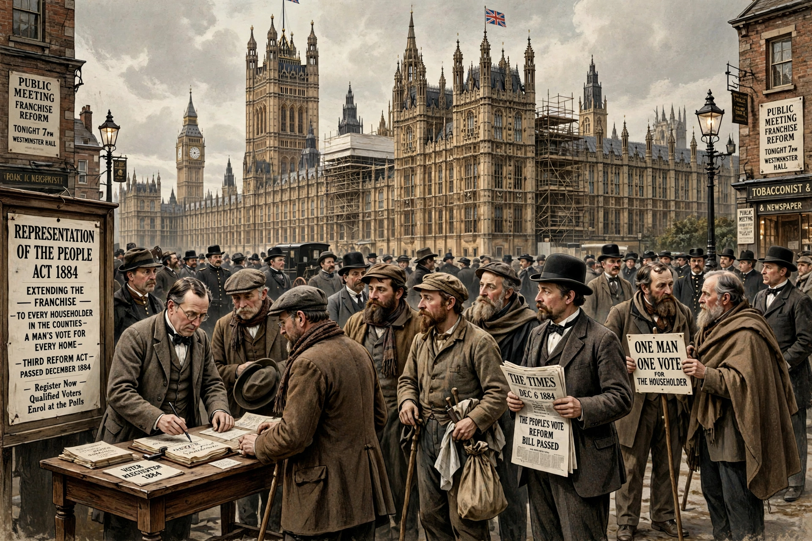

| Representation of the People Act 1884 | |
|---|---|
| Citation | 48 & 49 Vict. c. 3 |
| Introduced by | William Ewart Gladstone |
| Royal assent | 6 December 1884 |
The Representation of the People Act 1884, known as the Third Reform Act, extended the franchise in the United Kingdom by giving male householders in the counties the same voting rights as those in the boroughs, enfranchising many agricultural labourers.
The act applied the borough franchise — male householders and £10 lodgers — uniformly across the UK, increasing the electorate from about 3 million to about 5.5 million men. Combined with the Redistribution of Seats Act 1885, which created mostly single-member constituencies, it reshaped British electoral politics. It followed the earlier acts of 1832 and 1867.
Passed by Gladstone's Liberal government after negotiation with the Conservative leader Lord Salisbury over redistribution, the act still excluded about 40% of adult men (including live-in servants and soldiers in barracks) and all women; universal male suffrage came only with the Representation of the People Act 1918.